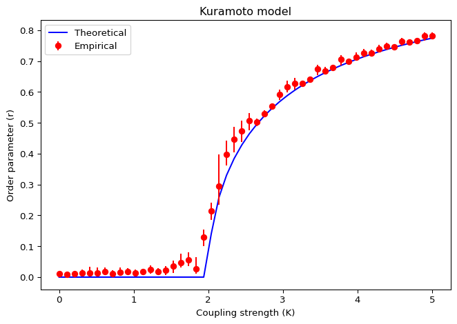

Kuramoto Model
Theory
The Kuramoto model describes a population of weakly coupled oscillators. Each oscillator has a phase \(\theta_i\) and a natural frequency \(\omega_i\).
The natural frequency of each oscillator (\(\omega_i\)) is drawn from a normal distribution centered at zero, and with standard deviation (scale parameter) \(\sigma\). The density function of this normal distribution is:
\[ g(\omega) = \frac{1}{\sqrt{2\pi}\sigma} \exp\left(-\frac{\omega^2}{2\sigma^2}\right). \tag{1}\]
The initial phase of each oscillator (\(\theta_i\)) is drawn from an uniform distribution between \(0\) and \(2\pi\).
For any system of weakly coupled, nearly identical limit-cycle oscillators, the long-term dynamics are given by phase equations of the following universal form:
\[ \dot\theta_i = \omega_i + \sum_{j=1}^N \Gamma_{ij} \left( \theta_j - \theta_i \right),\quad i = 1, \dots, N \tag{2}\]
Where \(\Gamma_{ij}(\theta)\) is the coupling function that describes how oscillator \(j\) influences oscillator \(i\) as a function of their phase difference. \(N\) is the total number of oscillators in the population.
The Kuramoto model corresponds to the simplest possible case of equally weighted, all-to-all, purely sinusoidal coupling:
\[ \Gamma_{ij}(\theta) = \frac{K}{N} \sin \left( \theta_j - \theta_i \right) \tag{3}\]
Where \(K\) is the coupling strength. The factor of \(1/N\) ensures that the total input to each oscillator remains finite as \(N\) increases. The Kuramoto model is a paradigmatic example of how collective synchronization can emerge from simple interactions among heterogeneous oscillators. It has been widely studied in physics, biology, and engineering to understand phenomena such as circadian rhythms, neuronal synchronization, and power grid stability.
The Order Parameter
To visualize the dynamics of the phases, it is convenient to imagine a swarm of points running around the unit circle in the complex plane.
The complex order parameter is a macroscopic quantity that can be interpreted as the collective rhythm produced by the whole population.
\[ r e^{i\Psi} = \frac{1}{N} \sum_{j=1}^N e^{i\theta_j} \tag{4}\]
\(r\) is the coherence of the population, which measures how synchronized the oscillators are. It ranges from \(0\) (completely incoherent) to \(1\) (fully synchronized). \(\Psi\) is the mean phase, which represents the average phase of the population.
Figure 1 shows a snapshot of the oscillators (blue dots) and the order parameter (red arrow) pointing towards the centroid of the phases. If you want to see this in action, run the script in amlab/odes_coupled/kuramoto.py to animate the oscillators on the unit circle.
Mean Field Approximation
Kuramoto noticed that the governing equation can be rewritten neatly in terms of the order parameter:
\[ \dot\theta_i = \omega_i + K r \sin(\Psi - \theta_i),\quad i = 1, \dots, N \tag{5}\]
This equation has a simple interpretation: each oscillator is pulled toward the mean phase \(\Psi\) with an effective coupling strength \(K r\) that depends on the coherence of the population. This is known as the mean field approximation. It is exact in the limit of infinite \(N\) and provides a powerful framework to analyze the dynamics of the system.
You can use this form of the equation to implement the ODE function for the Kuramoto model, which is often more efficient than computing pairwise interactions. The order parameter can be computed at each time step using the current phases of the oscillators.
Spontaneous Synchronization
The mean field approximation reveals a positive feedback loop that can lead to spontaneous synchronization:
- The phase \(\theta_i\) is pulled toward the mean phase \(\Psi\).
- The population becomes more coherent. In turn, the order parameter \(r\) increases.
- The effective strength of the coupling \(K r\) increases proportionally to the coherence.
- \(K r\) tends to recruit even more oscillators into the synchronized cluster, which feeds step 1.
In other words, the more oscillators are synchronized, the stronger the coupling becomes, which in turn promotes even more synchronization. This positive feedback can lead to a phase transition from incoherence to coherence as the coupling strength \(K\) crosses a critical threshold. The critical coupling strength \(K_c\) can be derived analytically for certain frequency distributions (e.g. Cauchy) and can be estimated numerically for others (e.g. normal).

Goal of this Session
Implement the Kuramoto model in Python, visualize the oscillators on a unit circle and find when the spontaneous synchronization happens.
Play with the following parameters and see how they affect the dynamics:
- Coupling strength, \(K > 0\)
- Number of oscillators, \(N\)
You can follow two approaches to the ODE function.
Pairwise Interactions
Follow equations Equation 2 and Equation 3 to compute the pairwise interactions between oscillators. This is straightforward but can be computationally expensive for large \(N\).
\[ \dot\theta_i = \omega_i + \sum_{j=1}^N \Gamma_{ij} \left( \theta_j - \theta_i \right),\quad i = 1, \dots, N \tag{6}\]
\[ \Gamma_{ij}(\theta) = \frac{K}{N} \sin \left( \theta_j - \theta_i \right) \tag{7}\]
Mean Field Approximation
Follow equation Equation 5 and Equation 4 to compute the dynamics using the order parameter. This is more efficient and provides insight into the collective behavior of the system.
\[ \dot\theta_i = \omega_i + K r \sin(\Psi - \theta_i),\quad i = 1, \dots, N \tag{8}\]
\[ r e^{i\Psi} = \frac{1}{N} \sum_{j=1}^N e^{i\theta_j} \tag{9}\]
We will start by initializing the oscillators and plotting them on the unit circle. Then, we will define the ODE function and use scipy.integrate.solve_ivp() to simulate the dynamics. Follow to the next page for the implementation details.
Reference
From Kuramoto to Crawford: exploring the onset of synchronization in populations of coupled oscillators by Steven H. Strogatz.